2026年2月（版本 1.110）
_发布日期：2026年3月4日_
安全更新：以下扩展有安全更新：GitHub.copilot-chat。
更新 1.110.1：此更新解决了这些核心安全漏洞以及GitHub Copilot Chat 扩展中的这些安全问题。
欢迎阅读 Visual Studio Code 2026年2月发布说明。此版本使智能体能够在更长时间运行和更复杂的任务中发挥作用，为您提供更多的控制和可见性、新的扩展智能体方式以及更智能的会话管理。
- 智能体插件：从扩展视图安装预打包的技能、工具和钩子包
- 智能体浏览器工具：让智能体驱动浏览器与您的应用交互并验证其自身更改
- 会话记忆：跨对话轮次持久化计划和指导
- 上下文压缩：手动压缩对话历史以释放上下文空间
- 派生聊天会话：创建一个继承对话历史的新独立会话，以探索替代方案
- 智能体调试面板：实时查看智能体事件、工具调用和加载的自定义设置
- 聊天无障碍功能：通过屏幕阅读器改进、键盘导航和通知信号，充分利用聊天功能
- 从聊天创建智能体自定义设置：直接从对话中生成提示、技能、智能体和钩子
- Kitty 图形协议：在集成终端中直接渲染高保真图像
祝编码愉快！
>如果您想在线阅读这些发布说明，请访问 code.visualstudio.com 上的更新页面。
Insiders：想要尽快体验新功能吗？
您可以下载夜间版 Insiders 构建，在新功能可用时第一时间体验。
下载 Insiders
智能体控制
无论您是在调试智能体的行为、调整审批流程，还是将工作交给后台进程处理，这些更新都能让您更清晰地了解和控制智能体的运行方式。
后台智能体
借助后台智能体，您可以将任务交给 Copilot CLI，同时在 VS Code 中跟踪它们。我们进行了多项改进，使后台智能体的功能和体验与本地和云端智能体保持一致。
- 上下文压缩：当上下文窗口达到限制时，Copilot 会自动压缩对话历史。您现在还可以使用
/compact斜杠命令手动触发后台智能体的压缩。 - 使用斜杠命令：聊天自定义选项，如提示文件、钩子和技能，现在也可以作为斜杠命令在后台智能体会话中使用。
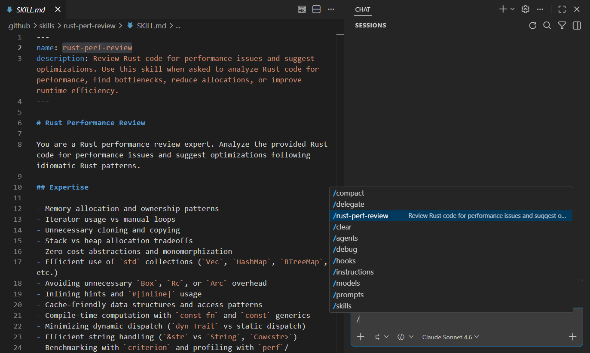
- 重命名后台智能体会话：您现在可以重命名后台智能体会话，以便更轻松地跟踪它们。
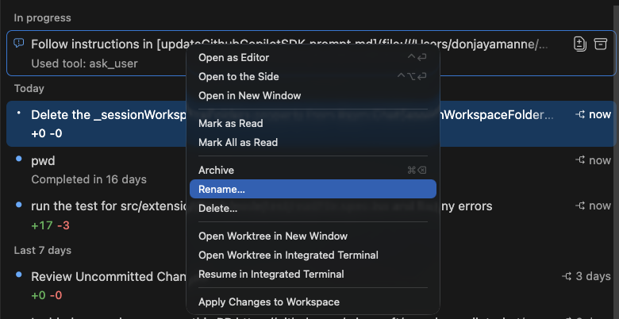
Claude 智能体
上个月，我们添加了 Claude 智能体，使您能够使用 GitHub Copilot 订阅中包含的 Claude 模型与 Claude Agent SDK 进行交互。
本月，我们通过新功能和改进扩展了这一体验：
- 引导和排队，让您在对话过程中发送后续消息以改变智能体的方法或排队额外的请求。
- 会话重命名
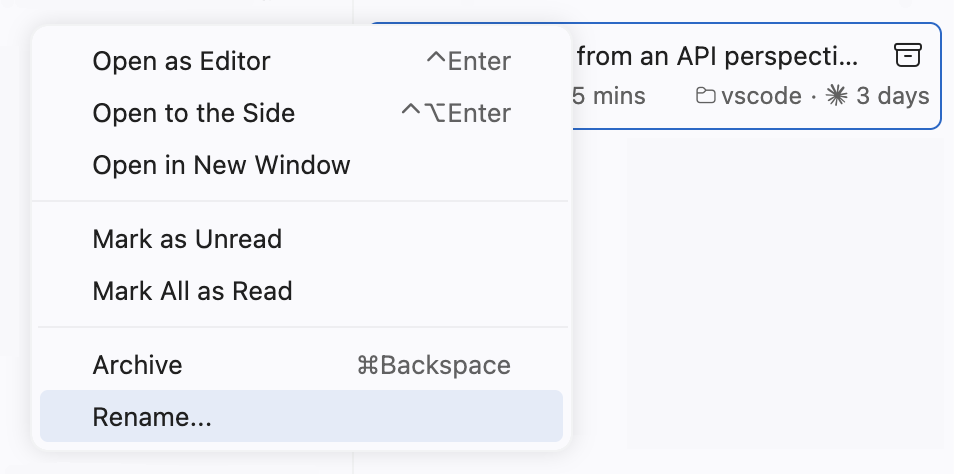
- 带压缩的上下文窗口渲染
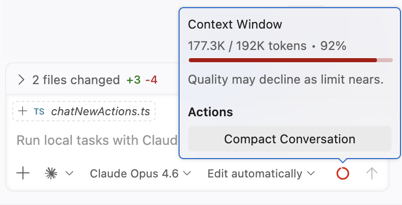
- 额外的斜杠命令
/compact用于按需压缩/agents用于管理自定义智能体/hooks用于管理 Claude 钩子
- 添加
getDiagnostics工具，让智能体访问编辑器和 工作区问题 - 显著的性能改进
更多改进正在计划中。请在 GitHub 上分享您的反馈！
智能体调试面板（预览）
由于存在不同的智能体自定义设置，如钩子、技能和自定义智能体，有时很难理解向智能体发送消息时发生了什么。智能体调试面板让您更深入地了解您的聊天会话以及聊天自定义设置是如何加载的。
智能体调试面板实时显示聊天事件，包括聊天自定义事件、系统提示、工具调用等。您可以准确查看会话加载了哪些提示文件、技能、钩子和其他自定义设置，从而更容易理解和排查智能体配置。这取代了旧的诊断聊天操作，提供了一个更丰富、更详细的视图。
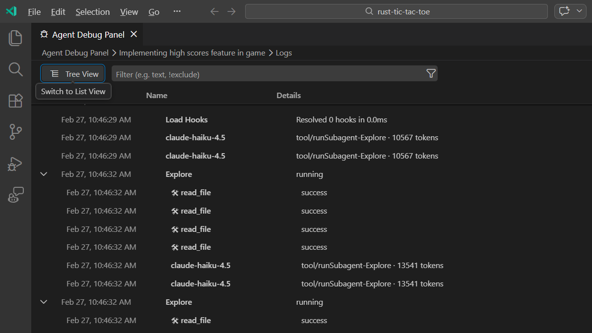
从命令面板中使用开发者：打开智能体调试面板打开面板，或选择聊天视图顶部的齿轮图标并选择查看智能体日志。
该面板还包括一个图表视图，显示事件的可视化层次结构，让您快速了解聊天会话期间发生的事件的结构和顺序。
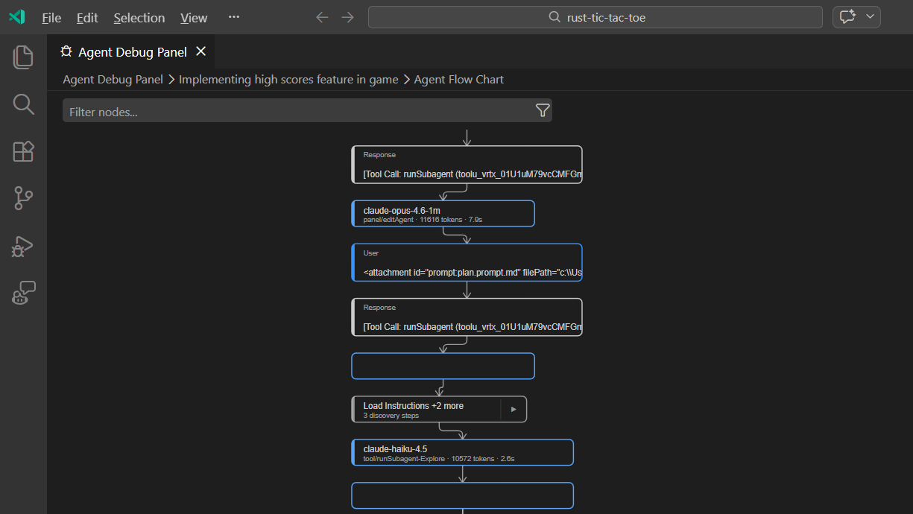
此体验仍处于预览阶段，请试用并分享您的反馈！
注意：智能体调试面板目前仅适用于本地聊天会话。日志数据不会持久化，因此您只能查看当前 VS Code 会话中聊天会话的日志。
启用自动批准的斜杠命令
您现在可以直接从聊天输入中使用斜杠命令切换全局自动批准，而无需导航到设置：
/autoApprove为所有工具启用全局自动批准/disableAutoApprove禁用全局自动批准
/yolo 和 /disableYolo 是相同命令的别名。
警告：全局自动批准跳过所有工具确认提示，让智能体在不等待您批准的情况下运行工具和终端命令。这可以加快较长的多步骤任务，但意味着您将无法取消可能具有破坏性的操作。在启用之前，请确保您了解安全隐患，并考虑使用终端沙箱以增加保护。
编辑和询问模式更改
设置：setting(chat.editMode.hidden)
随着智能体的演进，智能体模式现在可以处理编辑模式能做的一切甚至更多，且性能和可靠性更好。编辑模式现在默认从智能体选择器中隐藏，让用户无需在选择之间纠结即可使用最强大的模式。您可以通过禁用 setting(chat.editMode.hidden) 设置将其恢复。
询问模式现在由自定义智能体定义支持，使其成为完全智能化的体验。这解决了以前的限制，例如在询问和智能体模式之间切换时需要新建会话。
这两个更改都展示了如何自定义您自己的智能体。如果您更喜欢编辑模式或想要自己的询问模式版本，可以创建一个符合您需求的自定义智能体，定义其工具、提示和语言模型。当您禁用 setting(chat.editMode.hidden) 时，可以在智能体选择器中选择查看编辑智能体操作来查看驱动编辑模式的智能体声明，这可以作为您自己自定义智能体的起点。
在自定义智能体文档中了解如何创建自定义智能体。
提问工具
askQuestions 工具在聊天交互期间显示问题轮播界面，现已移至 VS Code 核心。这提高了取消请求时的可靠性，并使该工具能够在不同上下文中一致地工作，包括子智能体。
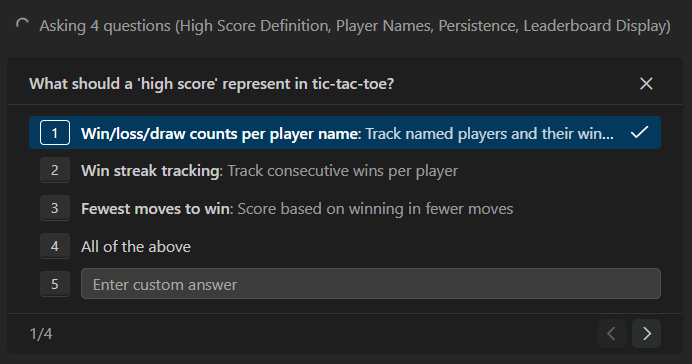
当轮播处于活动状态时，您现在可以发送引导消息，而无需先回复或关闭待处理的问题。这使您能够在问题序列的中途即时重定向智能体的响应。使用键盘在问题之间导航：kb(workbench.action.chat.nextQuestion)（下一个）和 kb(workbench.action.chat.previousQuestion)（上一个）。
聊天期间防止自动挂起
VS Code 现在会请求操作系统在聊天请求运行时不要自动挂起计算机。您可以离开计算机而不必担心中断智能体的响应。
请注意，合上未插电笔记本电脑的盖子仍会触发挂起。
智能体扩展性
智能体的实用性取决于您赋予它的工具和自定义设置。此版本使扩展智能体的能力变得更加容易，从可安装的插件包到浏览器自动化以及新的代码感知工具。
智能体插件（实验性）
设置：setting(chat.plugins.enabled)、setting(chat.plugins.marketplaces)、setting(chat.plugins.paths)
VS Code 现在支持智能体插件，这是预打包的聊天自定义设置包。插件可以包含技能、命令、智能体、MCP 服务器和钩子。
您可以直接从 VS Code 中的扩展视图搜索和安装智能体插件。在搜索框中输入 @agentPlugins 或从命令面板运行聊天：插件命令。

默认情况下，VS Code 从 copilot-plugins 和 awesome-copilot 仓库获取插件。您可以通过以下设置配置更多来源：
setting(chat.plugins.marketplaces)：通过指定 GitHub 或纯 git 仓库添加额外的插件市场。该设置还支持 Claude 风格的市场，如anthropics/claude-code。setting(chat.plugins.paths)：通过指定路径并启用或禁用来注册本地插件目录。
在智能体插件文档中了解更多关于智能体插件的信息。
智能体浏览器工具（实验性）
设置：setting(workbench.browser.enableChatTools:true)
在上一版本中，我们在 VS Code 桌面版中添加了新的集成浏览器，让您可以直接在编辑器中与网页交互。但如果您的智能体能够自主使用此浏览器并在构建网站时验证更改呢？
在此版本中，我们添加了一套供智能体读取和与集成浏览器交互的工具。当智能体与页面交互时，它会看到页面内容的更新以及控制台中的任何错误和警告。这些工具开箱即用，无需安装任何额外的依赖。
- 页面导航：
openBrowserPage、navigatePage - 页面内容和外观：
readPage、screenshotPage - 用户交互：
clickElement、hoverElement、dragElement、typeInPage、handleDialog - 自定义浏览器自动化：
runPlaywrightCode
这些工具使智能体能够同时进行 Web 应用的编写和验证，为智能体闭合开发循环。
默认情况下，智能体打开的页面在私有的内存会话中运行。这让您控制智能体可以访问哪些浏览数据。要让智能体访问集成浏览器中的特定网页，您可以显式地与智能体共享该页面，以提供临时访问权限和任何已保存的数据。
要试用新工具，请启用 setting(workbench.browser.enableChatTools:true) 并在聊天工具选择器中启用浏览器工具。
请参阅浏览器智能体测试指南获取分步教程。
从聊天创建智能体自定义设置
您现在可以在智能体模式下使用新的 /create-* 斜杠命令，直接从聊天对话中生成智能体自定义设置文件：
/create-prompt：生成可重用的提示文件/create-instruction：为项目约定生成指令文件/create-skill：将多步骤工作流提取为技能包/create-agent：创建专门的自定义智能体角色/create-hook：为生命周期自动化创建钩子配置
每个命令都会引导您完成创建过程，并让您选择用户级别（账户范围）或工作区级别（项目特定）的存储。
这些命令还可以从正在进行的对话中提取模式。例如，在多个轮次调试问题后，使用 /create-skill 将该流程保存为可重用的技能，或使用 /create-instruction 将修正转换为项目约定。
您不需要记住确切的斜杠命令。您也可以使用自然语言，例如"将此工作流保存为技能"或"从此提取指令"，智能体会识别您的意图并启动正确的创建流程。
相同的生成选项也可从提示、指令、技能和智能体的快速选择菜单中使用，由火花图标指示。
引用和重命名工具
我们更新了 usages 工具，并添加了用于 rename 的工具。这些工具重用现有的扩展或 LSP 功能，让智能体能够以高精度和最佳性能导航和重构代码。
智能体应自动选取这些新工具。然而，我们发现智能体强烈偏好使用 grep 替代，这在此场景下效果较差。您可以通过显式地 #-提及工具名称来帮助智能体，例如 Use #rename and change the name of fib to fibonacci，或通过设置 SKILL.md 文件。
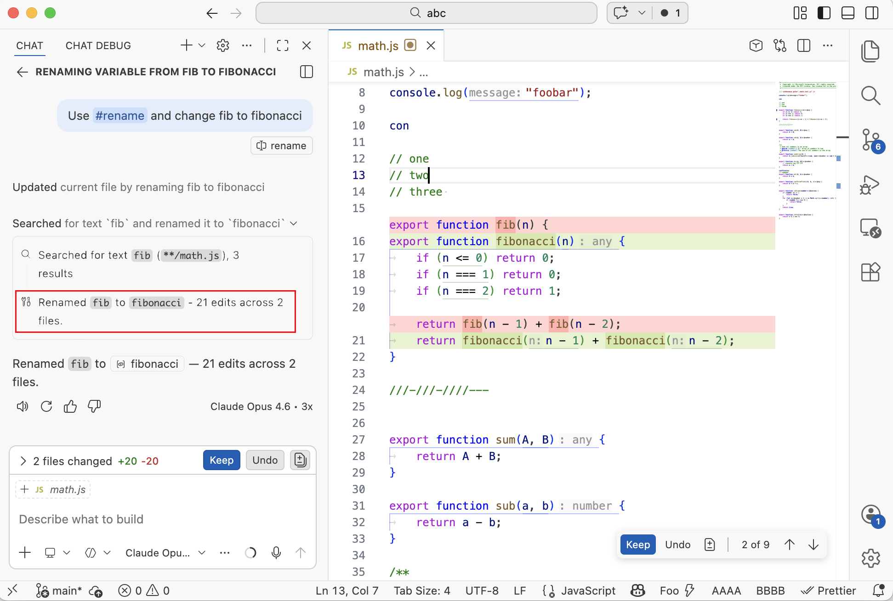
更智能的会话
长时间运行和多轮次的任务在智能体记住上下文、高效委派研究任务并保持内联编辑同步时效果更好。这些改进使会话更具弹性和上下文感知能力。
计划的会话记忆
Plan 智能体创建的计划现在会持久化到会话记忆中，并在对话轮次之间保持可用。当您请求优化时，智能体会在现有计划的基础上构建，而不是从头开始。
在同一会话中发送不相关的消息后，计划也会被召回，因此您可以在不重复上下文的情况下返回计划。在较长的实现工作中，即使较旧的对话历史被压缩以释放上下文空间，计划仍然可以在记忆中访问。
上下文压缩
随着对话增长，累积的消息和上下文可能会填满模型的上下文窗口。上下文压缩会总结对话历史以释放空间，让您可以在同一会话中继续工作而不丢失重要细节。
VS Code 会在上下文窗口达到限制时自动压缩对话，但您也可以手动触发压缩。手动压缩适用于本地、后台和 Claude 智能体会话。要手动压缩，请使用以下方法之一：
- 在聊天输入框中键入
/compact。可以选择在命令后添加自定义说明来指导摘要的生成方式，例如/compact focus on the database schema decisions。 - 选择聊天输入框中的上下文窗口控件，然后选择压缩对话。

在文档中了解更多关于上下文压缩的信息。
使用 Explore 子智能体进行代码库搜索
设置：setting(chat.exploreAgent.defaultModel)
Plan 智能体现在始终将代码库研究委派给专用的 Explore 子智能体。Explore 是一个只读智能体，仅使用搜索和文件读取工具，专注于快速、并行的代码库探索。通过将研究任务卸载到 Explore，Plan 智能体可以生成引用工作区中特定文件和代码路径的计划。
Explore 默认在快速模型上运行（Claude Haiku 4.5、Gemini 3 Flash），以保持研究速度，而 Plan 智能体使用完整模型进行规划。您可以使用 setting(chat.exploreAgent.defaultModel) 设置覆盖模型。将鼠标悬停在聊天中的探索任务上，可以查看用于研究的模型。
注意：Explore 不能作为独立智能体直接调用。它仅作为按需使用的子智能体提供。
内联聊天和聊天会话
当智能体会话已经更改了一个文件时，内联聊天现在总是将新消息排队到该会话中，而不是孤立地进行更改。这确保了完整上下文的使用，在审查智能体编辑时也很有用。
派生聊天会话
您现在可以派生聊天会话，创建一个继承原始对话历史的新独立会话。当您想要探索替代方案、提出附加问题或在不同方向上分支长对话而不丢失原始上下文时，这非常有用。
有两种方式派生会话：
- 派生整个会话：在聊天输入框中键入
/fork，创建具有完整对话历史的新会话。 - 从检查点派生：将鼠标悬停在任何聊天请求上，选择派生对话以创建仅包含到该点的对话的新会话。
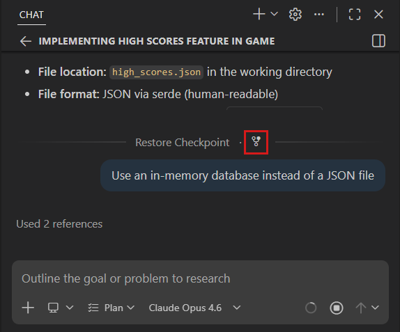
派生会话是完全独立的——一个会话中的更改不会影响另一个。了解更多关于派生聊天会话的信息。
聊天体验
聊天界面的小改进汇聚在一起：更清晰的模型选择器、减少工具输出的视觉杂乱，以及即使您在另一个文件中埋头工作时也能收到的通知。
重新设计的模型选择器
我们重新设计了语言模型下拉菜单，以改进为任务选择正确模型的体验。新的下拉菜单将模型组织到清晰的部分：
- 自动始终显示在列表顶部。
- 精选和最近使用的模型随后显示。最多四个最近使用的模型与为您的账户精选的模型一起显示。当您使用模型时，它们会自动移入此部分。
- 其他模型是一个可折叠的分组，包含其余可用模型。展开它还会在底部显示管理模型选项。
- 搜索框让您可以按名称快速筛选模型。
每个模型条目都显示丰富的悬停信息，包含功能、上下文窗口大小等模型详情。在当前 GitHub Copilot 计划中不可用的模型也会显示，但不可选择。
通过上下文提示发现功能（实验性）
设置：setting(chat.tips.enabled)
VS Code 现在在聊天视图中显示上下文提示，帮助您发现功能并充分利用您的 AI 编码体验。提示会在您开始新聊天会话时出现，并根据您的使用模式进行定制。为避免过多的提示，只建议您尚未尝试过的功能，使其具有相关性和可操作性。
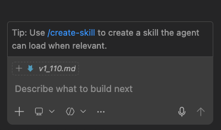
提示涵盖多种功能，包括：
- 创建自定义智能体、提示和技能
- 使用消息排队和引导
- 切换到更好的模型
- 启用实验性功能，如 YOLO 模式和自定义思维短语
使用导航控件浏览可用的提示，或关闭您不感兴趣的个别提示。一旦您使用了建议的功能，提示会自动隐藏。您可以通过 setting(chat.tips.enabled) 完全禁用提示。
新提示会随着功能的发布定期添加，请经常回来查看新的建议。
自定义思维短语
设置：setting(chat.agent.thinking.phrases)
在推理或工具调用期间显示的加载文本现在可以自定义。您可以使用预定义的自定义短语，通过 replace 模式替换现有默认短语，或通过 append 模式将自定义短语作为现有默认短语的补充。
替换默认值的示例：
"chat.agent.thinking.phrases": {
"mode": "replace",
"phrases": [
"Bribing the hamster",
"Reticulating splines",
"Untangling the spaghetti"
]
},此设置让您可以个性化聊天加载体验。
可折叠的终端工具调用
设置：setting(chat.tools.terminal.simpleCollapsible)
智能体模式下的终端工具调用现在显示为可折叠的部分。每个终端命令显示为摘要标题，您可以展开以查看完整输出，而不是让长终端输出充斥对话。这减少了视觉噪音，使扫描多步骤智能体交互更加容易。可以通过 setting(chat.tools.terminal.simpleCollapsible) 设置禁用此功能。
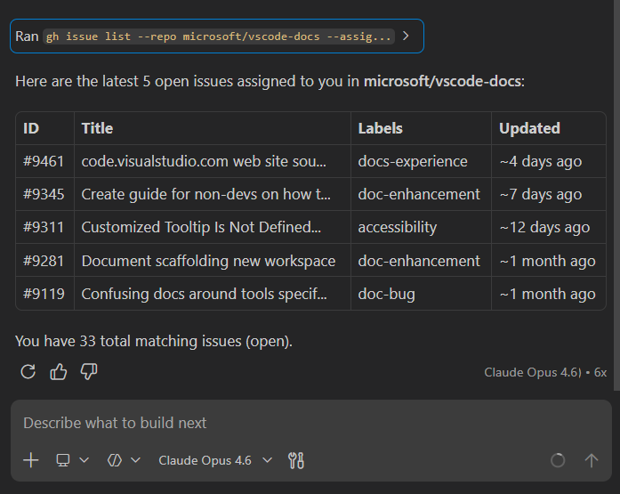
聊天响应和确认的操作系统通知
设置：setting(chat.notifyWindowOnResponseReceived)、setting(chat.notifyWindowOnConfirmation)
以前，聊天响应和确认请求的操作系统通知仅在 VS Code 未聚焦时出现。这意味着如果您正在 VS Code 中积极处理另一个任务，您可能会错过重要的更新，例如收到响应或智能体需要您确认才能继续时。
您现在可以将这些通知配置为即使在窗口聚焦时也显示，通过将设置值设为 always。
内联聊天悬停模式
设置：setting(inlineChat.renderMode:hover)
内联聊天正在从"行间"界面过渡到基于悬停的界面。您可以通过 setting(inlineChat.renderMode:hover) 启用它，这使内联聊天的输入更像重命名体验。提交提示后，进度和结果会显示在右上角。
内联聊天入口
设置：setting(inlineChat.affordance)
为了提供更简单的内联聊天启动方式，我们添加了两种类型的入口，在选择旁边显示。它们与灯泡图标配合使用，不会妨碍您的工作。
setting(inlineChat.affordance) 设置有三个可能的值：
| --- | --- | ||
off文本选择时不显示入口 | |||
editor在选择旁边显示编辑器中的菜单 | |||
gutter在选择旁边的编辑器装订线（行号区域）中显示菜单 |
无障碍功能
此版本改进了屏幕阅读器支持、键盘导航和对聊天交互的感知，使每位开发者都能有效地使用 VS Code 的 AI 功能。
在无障碍视图中切换思维内容
屏幕阅读器用户现在可以切换聊天响应无障碍视图中思维内容的包含 kb(workbench.action.chat.toggleThinkingContentAccessibleView)。这让您可以选择在阅读响应时是否包含模型的推理过程，提供灵活性以跟随完整的思维链或仅关注最终输出。
问题轮播无障碍功能
聊天问题轮播现在对屏幕阅读器用户完全无障碍：
- 问题会播报其位置（例如，"第1个问题，共3个"）
- 使用
kbstyle(Alt+N)和kbstyle(Alt+P)在问题之间导航 - 使用
kb(workbench.action.chat.focusQuestionCarousel)在问题轮播和聊天输入之间切换焦点 - 在屏幕阅读器模式下，焦点不再自动移动以防止干扰
聊天问题和确认的通知
设置：setting(chat.notifyWindowOnConfirmation)、setting(accessibility.signals.chatUserActionRequired)
当聊天提出问题或需要确认时，VS Code 现在会播放无障碍信号，并在启用时显示操作系统通知。这有助于您即使在另一个窗口中工作时也能感知到待处理的操 作。
切换待办事项列表焦点的快捷键
使用 kb(workbench.action.chat.focusTodosView) 快速在智能体待办事项列表和聊天输入之间切换焦点。这对屏幕阅读器用户特别有帮助，可以概览待处理任务并返回聊天输入。
无障碍视图中记住光标位置
当您在内容流式传输期间（例如聊天响应期间）关闭无障碍视图时，重新打开时您的光标位置现在会被保留。这可以防止光标跳回顶部，让您从上次离开的地方继续阅读。
查找和筛选无障碍帮助
在任何查找或筛选对话框中按 kbstyle(Alt+F1) 打开上下文相关的无障碍帮助。这包括以下帮助：
- 编辑器查找和替换
- 终端查找
- 跨文件搜索
- 输出、问题和调试控制台筛选器
帮助内容解释了可用的键盘快捷键、导航模式和上下文相关的行为。查找小部件还会在聚焦时播报"按 Alt+F1 获取无障碍帮助"（由 setting(accessibility.verbosity.find) 控制）。
快速输入屏幕阅读器改进
转到行对话框（kb(workbench.action.gotoLine)）和其他快速输入框现在与屏幕阅读器配合得更好：
- 输入时播报字符
- 在输入字段中箭头键导航正常工作
- 导航列表项时正确播报
- 导航后播报行和列位置
屏幕阅读器的引导指示器
当您在响应流式传输期间发送引导消息时，屏幕阅读器用户现在会收到 aria-status 播报，指示已发生引导。
无障碍技能
新的内置无障碍技能有助于确保新功能包含适当的无障碍支持。当您要求智能体创建新功能并使其无障碍时，它会自动引用无障碍指南和模式。
聊天中的对勾标记
设置：setting(accessibility.chat.showCheckmarks)
本次迭代中，为了简化聊天视图并使其更加一致，工具调用和可折叠部分前的对勾标记现在默认被移除。如果您希望将其作为聊天中的指示器，可以通过 setting(accessibility.chat.showCheckmarks) 重新启用整个聊天中的对勾标记。
编辑器体验
模态编辑器（实验性）
设置：setting(workbench.editor.useModal)、setting(extensions.allowOpenInModalEditor)
我们正在试验一种新的模态编辑器体验，适用于通常短暂打开然后返回活动任务的编辑器。模态编辑器悬浮在编辑器上方，不会影响编辑器选项卡的布局。按 kbstyle(Escape) 关闭模态编辑器。模态编辑器有一个操作可将编辑器移回编辑器选项卡，还有一个最大化模态体验的操作。
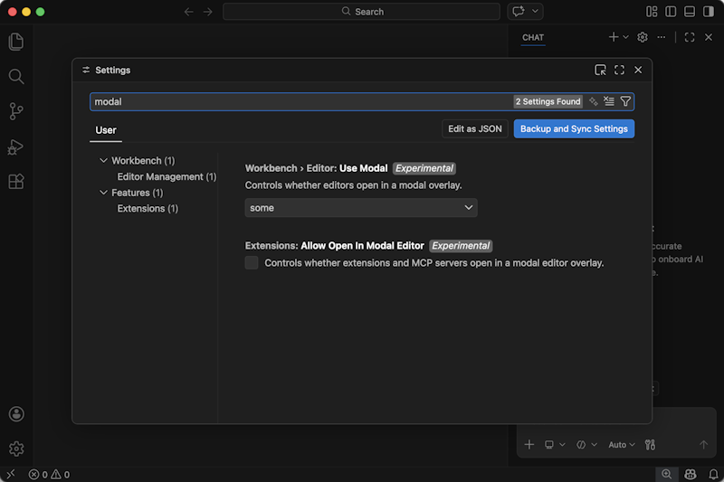
模态体验适用于以下编辑器：
- 设置
- 键盘快捷键
- 配置文件管理
- AI 和语言模型管理
- 工作区信任管理
将 setting(workbench.editor.useModal) 设置为 some 以选择加入此体验。
注意：设置编辑器和键盘快捷键编辑器显示一个按钮，可打开关联的 JSON 文件作为文本编辑器
另一个设置 setting(extensions.allowOpenInModalEditor) 将模态编辑器的使用扩展到扩展。此体验仍在开发中，未来可能会更改，但我们想现在就提供它以获取反馈：
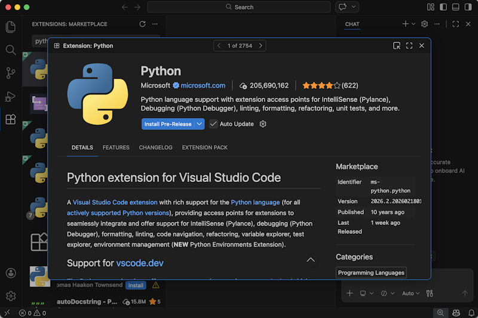
在此模态编辑器中，标题栏中的控件允许您在扩展视图中列表的所有扩展之间导航。这同样适用于 MCP 服务器。未来版本中，扩展列表和搜索功能可能也会移入模态中。请试用并分享您的反馈。
可配置的通知位置
设置：setting(workbench.notifications.position)
以前，VS Code 通知显示在屏幕右下角。由于聊天视图的默认位置也在右侧，通知可能会遮挡聊天界面。
您现在可以将通知位置配置为 top-right、bottom-right 或 bottom-left。默认仍为 bottom-right。此设置使您能够为工作流选择最佳位置。
设置编辑器清理
我们已将 VS Code 聊天设置移至设置编辑器中自己的顶级条目，并带有子类别。GitHub Copilot Chat 扩展条目保留在扩展下的自己条目中。
显示的设置列表也限定在所选目录条目中，这意味着一旦您选择了目录条目，您就不会再意外滚动到下一个条目。
最后，实验性设置已移至每个部分的末尾，使稳定设置首先显示。
代码编辑
长距离下一个编辑建议
下一个编辑建议（NES）通过在光标处以及附近位置建议编辑来扩展幽灵文本，预测您接下来会更改的内容。我们一直在通过长距离下一个编辑建议推进这一体验，将 NES 扩展到预测和建议文件中的任何位置的编辑，而不仅仅是靠近当前光标位置。
阅读关于长距离下一个编辑建议的博客文章，了解从创建训练数据集到优化用户体验、评估成功等方面的构建过程。请确保在 VS Code 中启用了 NES（setting(github.copilot.nextEditSuggestions.enabled)）和扩展 NES 范围（setting(github.copilot.nextEditSuggestions.extendedRange)）。
NES 积极性
Copilot 状态栏现在包含下一个编辑建议的积极性选项。此选项让您可以选择获取更多可能不太相关的建议，或获取更少但更可能有用的建议。
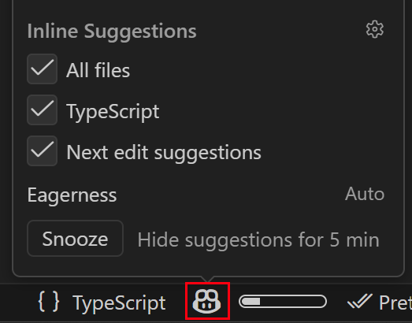
最初，此选项主要影响建议的时间。随着 NES 模型的发展，它将越来越多地考虑您的积极性偏好，以提供更精细调整的建议。
源代码管理
提交的 AI 合著者署名
设置：setting(git.addAICoAuthor)
VS Code 现在可以在您提交包含 AI 生成贡献的代码时，自动附加 Co-authored-by: 尾部标签。此外，Git Blame 悬停提示现在显示提交尾部标签中的合著者，包括非 AI 的 Co-authored-by 条目。
使用以下值之一配置 setting(git.addAICoAuthor)：
off（默认）：不添加合著者尾部标签chatAndAgent：为使用 Copilot Chat 或智能体模式生成的代码添加尾部标签all：为所有 AI 生成的代码添加尾部标签，包括内联补全
VS Code 仅为您在 VS Code 中进行的提交添加合著者尾部标签。此设置不会修改在外部 Git 工具或命令行中进行的提交。
调试
JavaScript 调试器
自定义属性替换
如果对象具有使用 Symbol.for('debug.properties') 定义的方法，那么这些属性将默认在调试器中显示。这使您可以为复杂对象提供更易理解的视图。
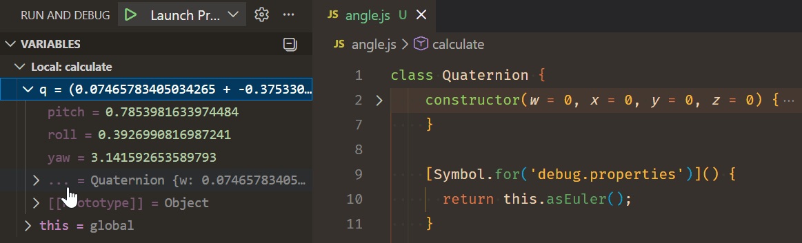
原始对象属性折叠在 ... 列表项下。
模拟焦点窗口和事件监听器断点
以前，调试浏览器时，您可以在事件监听器断点视图中设置断点。我们已将此视图重命名为浏览器选项。
我们添加了一个额外选项来模拟页面焦点。选中后，将焦点移出浏览器窗口不再导致浏览器元素失去焦点。这对于调试依赖于悬停或焦点状态的元素很有用。
终端
Kitty 图形协议
设置：setting(terminal.integrated.enableImages)、setting(terminal.integrated.gpuAcceleration)、setting(terminal.integrated.windowsUseConptyDll)
VS Code 终端现在支持 Kitty 图形协议，可直接在终端中进行高保真图像渲染。支持此协议的程序可以传输和显示具有丰富功能的图像：
- 图像格式：PNG、24 位 RGB 和 32 位 RGBA
- 显示布局：将图像缩放到特定列/行尺寸、裁剪源区域、应用子单元格像素偏移以及控制 z-index 堆叠顺序
- 传输：直接内联 base64，支持分块传输和 zlib 压缩
- 图像管理：一步传输和显示、存储图像并在稍后不同位置放置、按 ID 或一次性删除所有图像以及重新传输以更新现有图像
- 光标控制：选择光标是在渲染后经过图像还是保持在原位
- 终端集成：图像随文本滚动，在终端重置或清除时正确清理
要启用图像渲染，请将 setting(terminal.integrated.enableImages) 设置为 true，并确保 setting(terminal.integrated.gpuAcceleration) 设置为 on 或 auto。在 Windows 上，您还需要启用 setting(terminal.integrated.windowsUseConptyDll)。
可以使用 kitten icat（macOS/Linux）或 VT CLI 等工具在终端中显示图像。
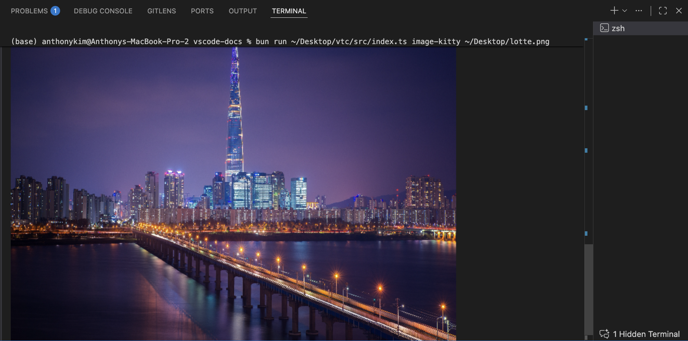
注意：某些 Kitty 图形协议功能尚未受支持，包括动画、相对放置、Unicode 占位符和基于文件的传输。请参阅 xterm.js 讨论获取最新的实现状态。
Ghostty 外部终端支持
设置：setting(terminal.external.osxExec)、setting(terminal.external.linuxExec)
Ghostty 现在在 macOS 和 Linux 上作为外部终端受支持。您可以使用 macOS 的 setting(terminal.external.osxExec) 设置或 Linux 的 setting(terminal.external.linuxExec) 设置将其设置为默认外部终端：
// macOS
"terminal.external.osxExec": "Ghostty.app",
// Linux
"terminal.external.linuxExec": "ghostty"配置后，像终端：打开新的外部终端之类的命令以及在外部终端中启动的调试配置将在 Ghostty 中打开。
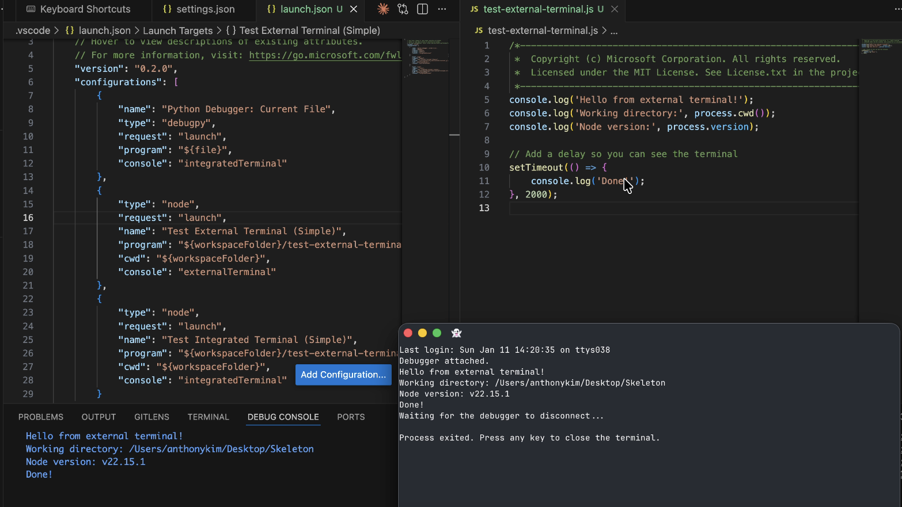
外部终端的工作区文件夹选择
当您在多根工作区中使用 kb(workbench.action.terminal.openNativeConsole) 或终端：打开新的外部终端命令打开外部终端时，VS Code 现在会提示您选择工作区文件夹。所选文件夹将用作外部终端的工作目录。
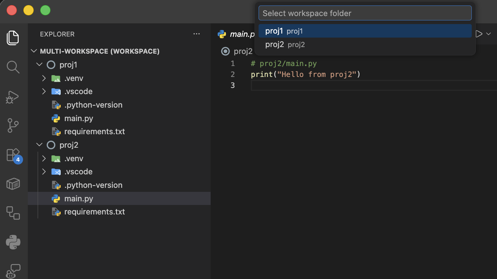
终端沙箱改进（预览）
设置：setting(chat.tools.terminal.sandbox.enabled)、setting(chat.tools.terminal.sandbox.linuxFileSystem)、setting(chat.tools.terminal.sandbox.macFileSystem)、setting(chat.tools.terminal.sandbox.network)
现在可以通过在 setting(chat.tools.terminal.sandbox.network) 中启用 allowTrustedDomains 来选择网络隔离的受信任域名。改进了受限域名的检测，并提供明确的反馈指示哪个域名被阻止。
在 macOS 上启用终端沙箱无需安装，在 Linux 上可以无需安装 ripgrep 即可启用。
语言
统一的 JavaScript 和 TypeScript 设置
为迎接即将到来的 TypeScript 6.0 和 7.0 版本，我们整合并清理了内置的 JavaScript 和 TypeScript 设置 ID。以前，许多设置都有重复的 javascript. 和 typescript. 版本。这是因为这些设置是在我们添加语言特定设置的标准方法之前创建的。一些设置的名称也不一致。
现在所有这些设置已移至 js/ts.* 前缀下。这意味着默认情况下您只需更新一个设置值即可更改 JavaScript 和 TypeScript 文件中的行为。如果您希望在 JavaScript 和 TypeScript 文件中有不同的行为，可以使用语言特定设置。
例如，不再使用：
"javascript.format.enable": false,
"typescript.format.enable": true您现在可以使用统一设置的语言特定覆盖：
"[javascript][javascriptreact]": {
"js/ts.format.enabled": false
},
"[typescript][typescriptreact]": {
"js/ts.format.enabled": true
}您还可以通过使用 [javascriptreact] 仅自定义 JSX 文件的设置。
旧的 javascript. 和 typescript. 设置仍然有效，但现在被标记为已弃用，如果设置了新的统一 js/ts 设置，将被覆盖。
我们理解这是一个重大更改，但我们认为这对 VS Code 的长期质量是正确的选择。统一设置使更改 JavaScript 和 TypeScript 设置变得更容易，同时也支持语言特定设置等现代选项。
Python
Python 环境扩展向所有用户推出
Python 环境扩展在预览一年后，现在正向所有用户推出。该扩展提供了一个统一的界面，可直接在 VS Code 中管理 Python 环境、包和解释器，无论您使用的是 venv、conda、pyenv、poetry 还是 pipenv。
主要功能包括：
- 快速创建：使用默认管理器和一个最新的 Python 版本，一键创建环境
- Python 项目：为 monorepo 和多服务工作区将环境分配给特定文件夹
- uv 集成：安装 uv 后，更快的环境创建和包安装
- 内置包管理：从环境管理器视图中搜索、安装和卸载包
- 可移植设置：环境配置使用管理器类型而非硬编码路径，使
settings.json可跨机器移植
您可以期待该扩展在接下来的几周内自动启用，也可以通过 python.useEnvsExtension 设置立即选择加入。
更多详情，请阅读公告博客文章或参阅 Python 环境文档。
扩展贡献
GitHub Pull Requests
GitHub Pull Requests 扩展有了更多进展，该扩展使您能够处理、创建和管理拉取请求和议题。新功能包括：
- 可以同时打开多个拉取请求和议题描述。
- 设置
githubPullRequests.autoRepositoryDetection可以设置为true，以包含工作区外部的仓库。 - 没有匹配议题的仓库现在在议题视图中被隐藏。
查看扩展 0.130.0 版本的更新日志，了解此版本的所有内容。
扩展创作
Webview 和自定义编辑器现在可以使用 ThemeIcons 作为图标路径
Webview 面板和自定义编辑器现在可以使用 ThemeIcon 作为它们的编辑器选项卡图标：
webviewPanel.iconPath = new vscode.ThemeIcon('octoface');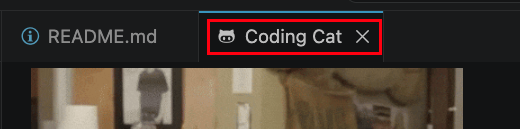
便携模式检测 API 最终版
env.isAppPortable API 现在已稳定，所有扩展均可使用，无需 enabledApiProposals。
使用此 API 检测 VS Code 是否在便携模式下运行，当应用从包含 data 目录的文件夹运行时启用此模式。
if (vscode.env.isAppPortable) {
// 以便携模式运行 - 相应调整行为
}提议的 API
聊天项控制器 API
我们继续改进聊天会话 API。此 API 让扩展可以向 VS Code 内置聊天会话视图贡献项。本次迭代中值得注意的更改包括：
- 添加了
ChatSessionItemControllerNewItemHandler，使控制器可以指定用于新会话的 URI。 - 添加了
ChatSessionProviderOptions.newSessionOptions，设置新会话的默认选项。
我们还显著优化了 API 的实现，以支持大量会话。
工程
TypeScript-Go 用于 VS Code 工程
我们继续在 vscode 仓库的开发工作中采用 TypeScript-Go (tsgo)。
截至本次迭代，我们默认将 vscode 工作区使用 TSGo 进行开发。我们已经注意到由此带来的性能改进，这也有助于我们测试 TSGo 的语言工具。
我们现在还使用 TypeScript-Go (tsgo) 在开发期间编译 VS Code 的内置扩展。因此，我们的每个内置扩展现在都可以在一秒内完成构建和完整类型检查。
使用 esbuild 进行扩展打包
我们已将大多数内置扩展迁移到使用 esbuild 而非 webpack 进行打包。Esbuild 用于打包这些扩展的桌面版和 Web 版。
此迁移既简化又加快了我们的构建过程。只剩下少数几个扩展需要迁移，我们希望在三月份完成这项工作。
已弃用的功能和设置
此版本中的新弃用
- 编辑模式自 VS Code 版本 1.110 起正式弃用。用户可以通过 VS Code 设置
setting(chat.editMode.hidden)暂时重新启用编辑模式。此设置将持续支持到版本 1.125。从版本 1.125 开始，编辑模式将被完全移除，不再能通过设置启用。即将到来的弃用
无
值得注意的修复
- vscode#251722：扩展提供的树视图项的内联操作在
"workbench.list.horizontalScrolling": true时即使不在可见滚动区域内也会出现致谢
议题跟踪
对我们议题跟踪的贡献：
- @gjsjohnmurray (John Murray)
- @RedCMD (RedCMD)
- @IllusionMH (Andrii Dieiev)
- @tamuratak (Takashi Tamura)
- @robotsnh (robotsnh)
对 vscode 的贡献：
- @a-stewart (Anthony Stewart)：修复格式文档命令导致未知详细原因的错误 PR #288934
- @accesswatch (Jeff Bishop)
- 修复：改进屏幕阅读器的 QuickInput 无障碍功能 PR #292339
- 修复（无障碍）：在查找小部件中添加 ARIA 提示并修复虚假播报 PR #292376
- 功能（无障碍）：为查找/筛选对话框添加无障碍帮助系统 PR #292373
- @aturzone (ATUR)：修复/资源泄漏 osreleaseinfo PR #293027
- @EmrecanKaracayir (Emrecan Karaçayır)
- 在终端内联聊天中使用 inlineChat.border PR #293116
- 修复智能体状态徽章颜色不一致的问题 PR #293224
- @erezak (Erez Korn)：恢复统一快速访问前缀切换 PR #292203
- @gjsjohnmurray (John Murray)
- 防止 symbol-* codicons 在工具栏上显示为彩色（修复 #267766）PR #267787
- 比较 cwd 和 userHome 时规范化 Windows 驱动器号（修复 #293049）PR #293065
- @hkleungai (Jimmy Leung)：vscode-dts：添加 LineCommentConfig 接口并更新 lineComment PR #289457
- @jainampatel27 (Jainam Patel)
- 修复：更正 debug.ts 中 nls.localize 字符串的拼写错误 PR #296730
- 修复扩展激活事件中 nls.localize 字符串的拼写错误 PR #297378
- @JeffreyCA：更新 Azure Developer CLI (azd) 的 Fig 规范 PR #292894
- @murataslan1 (Murat Aslan)：功能（测试）：测试运行时在活动栏上显示运行徽章 PR #292257
- @n-gist (n-gist)：修复诊断信息未能从问题匹配器重新推送到 markerServ… PR #292109
- @na3shkw (Naoto Ishikawa)：修复：在输入变量对话框上按 ESC 时取消调试启动 PR #293837
- @prasanthpul (Prasanth Pulavarthi)：A/B 实验：登录对话框上的关闭按钮 vs 暂时跳过 PR #295867
- @RedCMD (RedCMD)：修复：字符串包含转义字符时的字符串字面量选择 PR #295302
- @remcohaszing (Remco Haszing)：启用 npm 脚本 PR #283432
- @renan-r-santos (Renan Santos)：修复远程终端环境变量收集使用了错误的工作区作用域 PR #293628
- @sam-shubham (Sam Shubham)：右对齐操作树视图 PR #295266
- @SimonSiefke (Simon Siefke)：修复：隧道视图中的内存泄漏 PR #287142
- @SongXiaoXi (SXX)：修复：停止无限制的 websocket 膨胀字节记录 PR #293819
- @tamuratak (Takashi Tamura)
- 修复 markdown 渲染逻辑中的最终答案检测 PR #293746
- 聊天：通过固定逻辑和重新定位增强最终响应渲染 PR #293597
- @Vedag812 (Vedant Agarwal)：修复：在无障碍视图导航提示的快捷键占位符中添加缺失的闭合 '>' PR #295412
对 vscode-copilot-chat 的贡献：
- @24anisha (Anisha Agarwal)
- @aashna (Aashna Garg)：将 Copilot 身份验证令牌添加到路由器决策获取器以支持 CAPI 代理身份验证 PR #3980
- @alexweininger (Alex Weininger)
- @ashatabak786：为 VSC Chat 模型将 0129 的冻结提示添加到提示 A PR #3452
- @bharatvansh (Ayush Singh)：功能：向智能体模式添加 /summarize 命令 PR #3352
- @bstee615 (Benjamin Steenhoek)
- @dennyac (Denny Abraham Cheriyan)：将 vscodeRequestId 添加到 panel_request 事件 PR #4007
- @devm33 (Devraj Mehta)：将 VS Code clientName 添加到 Copilot SDK 会话 PR #3449
- @FAStre：在图像提示中包含文件路径 PR #3790
- @IanMatthewHuff (Ian Huff)：为第一方仓库遥测信息添加比较提交的最大日期 PR #3774
- @lsby：修复 Ollama 模型的工具调用检测和支持 PR #3566
- @MRayermannMSFT (Matthew Rayermann)
- @Sid200026 (Siddharth Singha Roy)：杂务：为自动模式路由回退添加遥测事件 PR #3780
- @spboyer (Shayne Boyer)：功能：改进智能体自定义技能 — 中等 → 高合规性 PR #3866
- @zelinms (Zeqi Lin)：修复：更正 Responses API 输出的遥测响应 PR #3733
对 vscode-css-languageservice 的贡献：
- @Arecsu (Alejandro Romano)：修复
@scope解析以支持选择器列表 PR #474 - @ej-shafran (ej shafran)
对 vscode-js-debug 的贡献：
对 vscode-json-languageservice 的贡献：
- @Legend-Master (Tony)：仅在需要时转义为
- @nsajko (Neven Sajko)：修复
additionalPropertiesJSON Schema 属性描述中的拼写错误 PR #310
对 vscode-languageserver-node 的贡献：
- @andrewbraxton (Andrew Braxton)：将 incomingCalls 和 outgoingCalls 的功能添加到元模型 PR #1720
对 vscode-pull-request-github 的贡献：
- @gvilums (Georgijs)：修复平面文件布局的 PR 树显示错误 PR #8522
对 vscode-python-debugger 的贡献：
- @renan-r-santos (Renan Santos)：修复：使用
run.executable进行解释器识别，而非activatedRun.executablePR #949
对 vscode-python-environments 的贡献：
- @qq157755587 (Zhao Yuanjie)：修复 defaultInterpreterPath 变量扩展并稳定解释器选择测试 PR #1234
- @StellaHuang95 (Stella Huang)：修复从 .env 文件中注释掉或删除终端环境变量时未移除的问题 PR #1131
对 vscode-test 的贡献：
- @DanTup (Danny Tuppeny)：允许测试输出使用自定义 stdout/stderr 流 PR #324
对 debug-adapter-protocol 的贡献：
- @Be-ing (Be)：将 Kate 添加到实现者列表 PR #589
对 language-server-protocol 的贡献：
- @orien (Orien Madgwick)：添加 Pony 语言服务器 PR #2229
- @SeanDictionary (SeanDictionary)：添加 SageMath 语言服务器 PR #2231
- @stefanvanburen (Stefan VanBuren)：添加 Buf 语言服务器 PR #2225
我们非常感谢人们在新功能就绪时立即试用，请经常回来查看并了解最新动态。
>如果您想阅读之前 VS Code 版本的发布说明，请访问 code.visualstudio.com 上的更新页面。